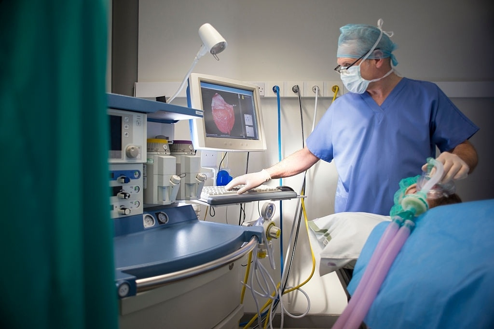
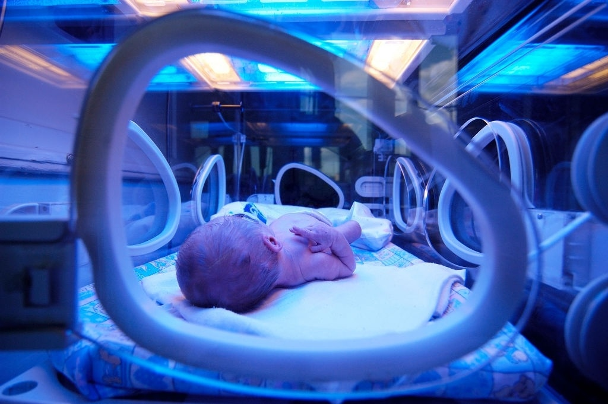
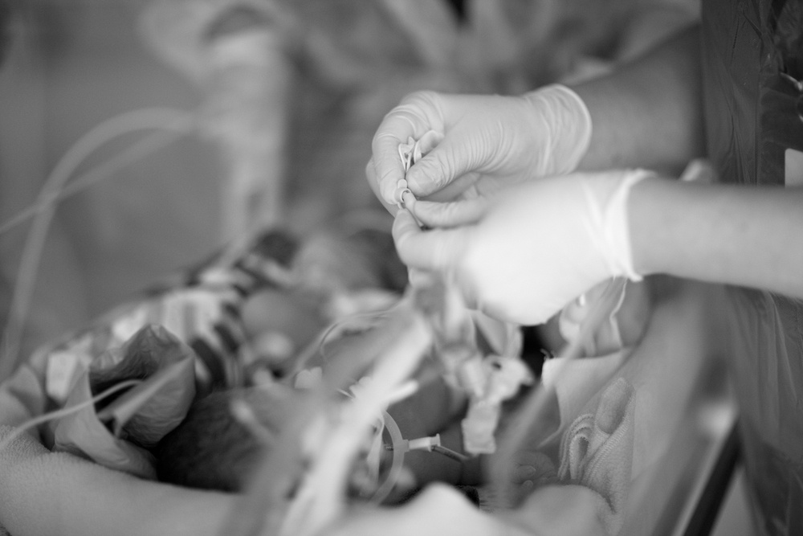

PICU FACILITY LAYOUT

PICU SURVIVAL STATISTICS

PICU FELLOWSHIP PROGRAM

PICU DOCTORS PROFILE
VACCINES
- The department is the ultimate referral center for pediatric care in the entire south gujarat.
- The department is recognized as level III intensive care unit by the national body.
- Round the clock availability of pediatricians is a unique feature of this department.
- Trained nursing staff to cater to the specific needs of pediatric patients.

Nirmal hospital pvt. ltd. has state-of-the-art, 7 bedded, level 3 pediatric intensive care Unit each bed has attached multi-para monitors and facility to monitor invasive blood pressure and central venous pressure. The PICU is equipped with 6(CRRI-HDMI) conventional ventilators and shares two HFOV high frequency oscillator ventilators with NICU. PICU has approximately 800 admissions in a year with mortality rate of 8-10% which is at par with the national statistics. In addition to the routine procedures central venous line insertion, arterial cathaterisation, ICD insertion, TPN administration, peritoneal dialysis and PICU can support hemodialysis as well as non invasive ventilation. PICU has also acquired flexible fiber optic bronchoscope and it will be used where indicated in managing children with respiratory problems. PICU staff actively supports the transport of sick children from the surat city and from the towns with in radius of 100km outside Surat.
Pediatric intensive care unit has two full time pediatric intensivists Dr Jignesh Patel and Dr Jigesh Vaidya in addition to Dr Nirmal Choraria (Head of PICU & Chief Pediatrician) and Dr Rajiv Agrawal (Senior Pediatrician – visiting faculty).